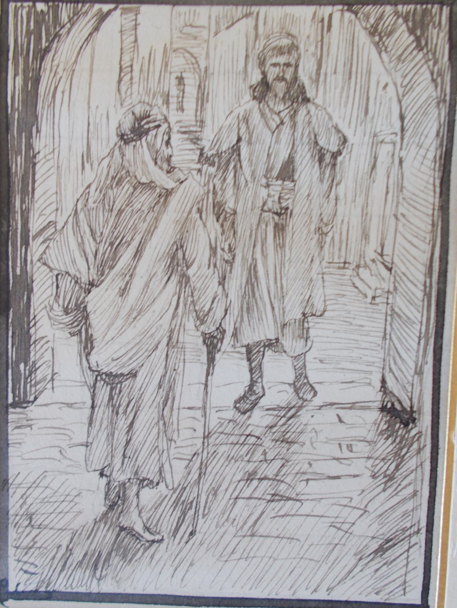

1 Samuel 9 — The Mister Translation

Tissot draws verse 18: Saul, a head taller, meets an old man “in the middle of the gate” and asks him the way to the seer’s house, not knowing that the old man is the seer.

Translator's Notes — verse by verse
A man of Benjamin. “Now there was a man of Benjamin”: the book opened Elkanah’s story the same way, “Now there was a certain man from Ramathaim-zophim” (1 Samuel 1:1, now on these pages), and a second story begins. The written text has “from Ben-yamin” as two words, the margin “from Benjamin” as one. Kish gets five generations and the title “a mighty man of valour”, gibbor chayil, the words used of Boaz (Ruth 2:1, now on these pages). The ASV has “a mighty man of valor”; the NWT 1984 “a man mighty in wealth”; the NIV “a man of standing”. Josephus calls Kish “a man of good family and good character” (Antiquities 6.45, numbered 6.4.1 in Whiston).
“A young man, and good.” Saul is bachur va-tov, the two words of the last chapter’s warning that the king would take “your best young men”, bachureikhem ha-tovim (1 Samuel 8:16, now on these pages): the king himself is one of them. Tov covers good and good-looking, and “there was no man among the sons of Israel better than he” keeps both. His name, Sha’ul, is the verb of the people “asking” for a king (8:10; sha’al). “From his shoulders upward he was taller than all the people.” The KJV has “a choice young man, and a goodly”; the NWT 1984 “young and handsome”; the ASV “from his shoulders and upward he was higher than any of the people”.
The she-donkeys. Kish’s atonot are lost, and Saul and a servant go looking. Josephus says Kish delighted in them more than in any of his other possessions (Antiquities 6.46). The search runs through the hill country of Ephraim, Shalishah and Shaalim, then “the land of the Benjamites”, written erets yemini, the same short form as the “Benjamite” of verse 1; the Greek gives other names for the stages. It ends in “the land of Zuph”, the name of Samuel’s ancestor in 1 Samuel 1:1, so the unnamed town ahead lies in the prophet’s family country. “My father will leave off the she-donkeys and be anxious about us.” The ASV has “lest my father leave off caring for the asses, and be anxious for us”; the NIV “stop thinking about the donkeys and start worrying about us”.
“All that he says surely comes about.” The servant knows “a man of God in this city”, the title of the nameless prophet who came to Eli (1 Samuel 2:27) and of Moses (Deuteronomy 33:1, both now on these pages; ish ha-Elohim). “The man is held in honour”, nikhbad, from kaved, “heavy”, and “all that he says surely comes about”: the opposite of the false prophet whose word “does not happen and does not come about” (Deuteronomy 18:22), and the man of whom it was said that Jehovah “let none of his words fall to the ground” (1 Samuel 3:19, both now on these pages). The ASV has “all that he saith cometh surely to pass”; the NWT 1984 “All that he says comes true without fail”.
A present, a quarter shekel. “There is no present to bring to the man of God”: the word teshurah stands in one verse of the Hebrew Bible, and its sense comes from this verse alone. The servant has “a quarter of a shekel of silver”. Josephus says the two did not know that the prophet took no fee (Antiquities 6.48). The Geneva has “the fourth part of a shekel of silver”; the TLB “I have a dollar!”
Prophet and seer. Verse 9 is an aside to a later reader: “for the one called a prophet today was formerly called a seer.” It stands two verses before the girls are asked “Is the seer here?”, so that the old word will not puzzle: the aside is written for readers who no longer used it. Seer is ro’eh, “one who sees”, from ra’ah; it is spelled with a different first letter from the ro‘eh who is a shepherd. Prophet is navi, and to “inquire of God” is darash. The ASV has “for he that is now called a Prophet was beforetime called a Seer”; the NWT 1984 “For the prophet of today used to be called a seer in former times”.
Girls at the water, the high place. On the ascent the two meet “girls going out to draw water”, as Abraham’s servant waited where “the daughters of the men of the city are coming out to draw water” (Genesis 24:13) and as Moses met the daughters of the priest of Midian (Exodus 2:16, both now on these pages); in those stories the meeting at the water leads to a marriage, and here it leads to Samuel. “The people have a sacrifice today on the high place”, the bamah, and “he blesses the sacrifice; after that the invited eat”. The ASV has “for the people have a sacrifice to-day in the high place”; the KJV “because he doth bless the sacrifice; and afterwards they eat that be bidden”.
An uncovered ear. “Jehovah had uncovered Samuel’s ear”: the idiom of telling someone what he does not yet know, as Boaz said to his kinsman, “I thought I would uncover your ear” (Ruth 4:4, now on these pages). The NWT 1984 has “he had uncovered the ear of Samuel”; the ASV “Now Jehovah had revealed unto Samuel”.
A leader, not yet a king. “You shall anoint him as leader over my people Israel”: the title is nagid, “leader”, not the melekh, “king”, the elders asked for, and the act is anointing (mashiach). “He will save my people from the hand of the Philistines”, though the chapter before said the Philistines “did not come again into the territory of Israel” in Samuel’s days (1 Samuel 7:13, now on these pages). “For I have seen my people, for their outcry has come to me” are the words of the burning bush, “I have surely seen the affliction of my people … the outcry of the sons of Israel has come to me” (Exodus 3:7, 9, now on these pages). The Greek has “the affliction of my people” here too. The NWT 1984 supplies it in brackets, “I have seen [the affliction of] my people”; the ASV has “thou shalt anoint him to be prince over my people Israel”.
“This one will restrain my people.” The verb is atsar, “restrain, hold back”, the verb of Sarai’s “Jehovah has kept me from bearing” (Genesis 16:2, now on these pages), here of holding a people in check, governing. The NWT 1984 has “This is the one that will keep my people within bounds”; the ASV “this same shall have authority over my people”; the KJV “this same shall reign over my people”.
“Am I not a Benjamite?” “Do not set your heart on them … And for whom is all the desire of Israel?”: chemdah, desire, or the things desired. The KJV has “And on whom is all the desire of Israel?”; the ASV “And for whom is all that is desirable in Israel?”. Saul answers as Gideon did, “my clan is the poorest in Manasseh, and I am the least in my father’s house” (Judges 6:15): “Am I not a Benjamite, from the smallest of the tribes of Israel, and my clan the least?” Benjamin was the tribe Israel had wept over, “that today one tribe should be missing from Israel” (Judges 21:3, both now on these pages). In Josephus Saul tells Samuel that he is mocking him (Antiquities 6.51).
The head of the table. Samuel brings Saul and his servant “into the hall” and gives them “a place at the head of the invited; and they were about thirty men”. The Greek has about seventy, and so does Josephus (Antiquities 6.52, numbered 6.4.1 in Whiston). The NIV has “about thirty in number”; the ASV “who were about thirty persons”.
The portion and the thigh. “Bring the portion that I gave you”: manah, the word of Elkanah’s “portions” and of Hannah’s “double portion” (1 Samuel 1:4–5, now on these pages). The cook “lifted up the thigh and what was on it”: the thigh, shoq, is the priest’s share of a peace offering, “the right thigh you shall give to the priest” (Leviticus 7:32, now on these pages), and here it is set before Saul. Josephus calls it a royal portion (Antiquities 6.52). The ASV has “the cook took up the thigh, and that which was upon it”; the KJV “the cook took up the shoulder”. The words that follow are hard Hebrew, “for it has been kept for you for the appointed time, since I said, I have invited the people”. The ASV has “unto the appointed time hath it been kept for thee”; the NWT 1984 “to the appointed time they have reserved it for you that you may eat with those invited”.
On the roof. “He spoke with Saul on the roof.” The Greek reads instead that they spread a bed for Saul on the roof, and begins verse 26 “and he lay down”. The Douay has both, “he spoke with Saul upon the top of the house: and he prepared a bed for Saul on the top of the house”. In verse 26 the written text has “the roof” and the margin “to the roof”. The NWT 1984 has “he continued speaking with Saul on the housetop”.
“The word of God.” At the edge of the town the servant is sent ahead, and Samuel says, “but you, stand still now, that I may let you hear the word of God.” The chapter stops there; the anointing comes in the next verse (1 Samuel 10:1, now on these pages). The NWT 1984 has “stand still now that I may let you hear the word of God”; the KJV “stand thou still a while, that I may shew thee the word of God”.
Patterns worth carrying forward
Where this translation keeps the words exact and distinct: “a mighty man of valour” for gibbor chayil, as in Ruth 2:1; “a young man, and good” for bachur va-tov, as in 8:16; “she-donkeys”; “a man of God”; “held in honour” for nikhbad; “a present” for teshurah; “seer” for ro’eh and “prophet” for navi; “uncovered … ear”, as in Ruth 4:4; “leader” for nagid; “outcry”, as in Exodus 3:9; “restrain” for atsar; “clan”, as in Judges 6:15; and “portion” for manah, as in 1:4–5.
Echoes paid. The people who were “asking” (8:10) get Saul, “asked”; the king who will take “your best young men” (8:16) is himself “a young man, and good”; the opening “Now there was a man” of 1:1 begins a second story; and the “portion” of Elkanah’s table (1:4–5) is set before Saul.
Echoes planted. The anointing (1 Samuel 10:1), and Saul “taller than all the people from his shoulders upward” when he is chosen (10:23), both now on these pages.
Next in this book: 1 Samuel 10 — Samuel pours a flask of oil on Saul’s head, gives him three signs, and the spirit of God rushes on him among the prophets (“Is Saul also among the prophets?”); at Mizpah the lot falls on him, and he is found hiding among the baggage.